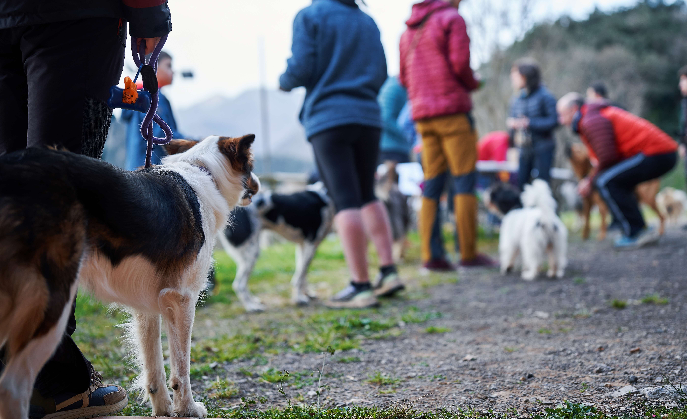

Club de canicross 4 Patas
Muévete a tu ritmo y Entrena en compañía
En 4 Patas creemos en el bienestar compartido: el tuyo y el de tu compañero canino. Para nosotros, el deporte es una manera de conectar, de encontrar equilibrio y de disfrutar del movimiento sin prisas ni presiones.
Somos un club abierto y cercano, pensado para que cada persona pueda entrenar a su ritmo y cada perro se sienta seguro y acompañado. Aquí entendemos el ejercicio como un proceso tranquilo, donde lo importante no es cuánto avanzas, sino cómo vives el camino.
Únete a un espacio donde cada entrenamiento es una oportunidad para crecer en compañía y disfrutar del movimiento de forma sencilla y auténtica.
Quienes somos
Somos un grupo de personas que disfruta del deporte al aire libre junto a sus perros. Entrenamos con calma, escuchando el ritmo de cada equipo humano–canino y creando un espacio seguro donde todos pueden participar.
Lo que nos mueve no es la velocidad, sino la conexión: aprender juntos, compartir experiencias y encontrar un punto de equilibrio entre actividad, salud y bienestar.
Si buscas un lugar donde entrenar sin presiones, descubrir nuevas rutas y sentirte parte de una comunidad que acompaña, este es tu sitio.
Conócenos

En redes

Pepa Rosales
@pepiActiu

Alex Rodríguez
@alex_conecta

Mar Gómez
@mar_runs4patas

Roger Delamunt
@rogeri_run
Hoy tocó ruta tranquila con Luna. Mucho verde, buen ambiente y un ritmo que se adaptó perfecto a nuestro día. Qué gusto entrenar así.
No era mi mejor mañana, pero salí igual. El grupo acompañó y mi compañero canino marcó el paso con una calma increíble. Gracias por ese apoyo...
Primer entrenamiento en 4 Patas y me sorprendió la sensación de unión. Nadie corre solo pero cada perro va a su ritmo. Repetimos seguro
Hoy descubrimos un sendero nuevo. Fresquito, suelo cómodo y un ambiente superagradable. Mi perro disfrutó tanto como yo, ¡qué equilibrio más...
Entreno suave después de una semana intensa. Me encantó cómo el grupo se ajustó a distintos ritmos sin perder la energía. Mejor que muchos g...
CaniBlog

10/12/2025 12:30
Esta semana el grupo de perros pequeños tuvo una salida especialmente agradable. Elegimos un circuito corto y tranquilo, con zonas amplias y terreno fácil para que cada equipo pudiera avanzar con comodidad.
Desde el inicio se notó un ambiente relajado: pasos cortos, respiración calmada y un ritmo constante que permitió disfrutar del paseo sin prisas. Los perros exploraron con curiosidad, manteniendo siempre la distancia y el respeto entre ellos, mientras los guías compartían consejos y experiencias.
El tramo final, junto al área de pinos, fue el favorito de todos. Allí hicimos una pequeña pausa para observar cómo cada perro encontraba su propio tempo y cómo la armonía del grupo se mantenía de forma natural.
Un entrenamiento sencillo, equilibrado y lleno de buenas sensaciones. De esos que recuerdan por q...
saber másEventos
Diciembre
| Su | Mo | Tu | We | Th | Fr | Sa |
|---|---|---|---|---|---|---|
| 1 | 2 | 3 | 4 | 5 | 6 | |
| 7 | 8 | 9 | 10 | 11 | 12 | 13 |
| 14 | 15 | 16 | 17 | 18 | 19 | 20 |
| 21 | 22 | 23 | 24 | 25 | 26 | 27 |
| 28 | 29 | 30 | 31 |